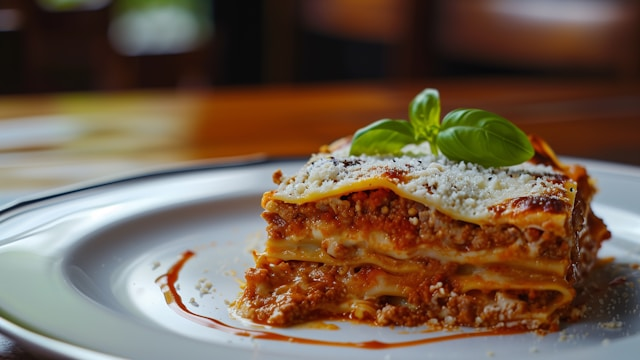

Lasagna Recipe
Description
Lasagna is a classic Italian dish made with layers of wide,
flat pasta, rich meat sauce (often bolognese), creamy béchamel
or ricotta cheese, and melted mozzarella or parmesan, baked until bubbly and golden.
Home
Ingredients
- Lasagna noodles
- Ground meat (beef or a beef/pork mix is common)
- Canned crushed tomatoes or tomato sauce
- Onion
- Garlic
- Ricotta cheese
- Mozzarella cheese (shredded)
- Parmesan cheese (grated)
- Eggs (optional, for the ricotta mixture)
- Fresh or dried herbs (oregano, basil, parsley)
- Salt
- Pepper
- Olive oil
Steps
- Make the Meat Sauce:
Brown the ground meat in a large pot or pan. Drain any excess fat.
Add chopped onion and minced garlic, and cook until softened.
Stir in the crushed tomatoes or tomato sauce, along with herbs (like oregano and basil), salt, and pepper.
Simmer the sauce for at least 20-30 minutes, or longer if you have time, to let the flavors meld.
- Prepare the Cheese Mixture:
In a bowl, combine the ricotta cheese, a beaten egg (if using), grated Parmesan cheese, and a pinch of salt and pepper.
You can also add some chopped fresh parsley if you like.
- Cook the Noodles:
Boil the lasagna noodles according to package directions until al dente (firm to the bite).
Drain them well and, if possible, lay them out on a clean surface or separate them with a little oil to prevent sticking.
- Assemble the Lasagna:
Spoon a thin layer of meat sauce on the bottom of a large baking dish.
Place a layer of cooked lasagna noodles over the sauce.
Spread half of the ricotta cheese mixture evenly over the noodles.
Sprinkle a layer of shredded mozzarella cheese.
Add another layer of meat sauce.
Repeat the layers: noodles, remaining ricotta, mozzarella, and then finish with a final layer of noodles topped generously with sauce, mozzarella, and Parmesan.
- Bake It:
Cover the baking dish loosely with aluminum foil.
Bake in a preheated oven (usually around 190°C / 375°F) for about 25-30 minutes.
Remove the foil and continue baking for another 15-20 minutes, or until the cheese is bubbly and golden brown.
- Rest and Serve:
Let the lasagna rest for 10-15 minutes after taking it out of the oven. This helps it set and makes serving much easier.
Slice and enjoy!